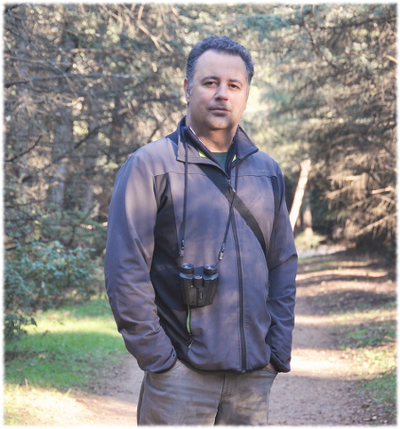

Laboratoire Sols, Solides, Structure - Risques (3SR)
Université Grenoble Alpes, IUT 1 de Grenoble, département GCCD
Domaine Universitaire BP53
38041 Grenoble Cedex 9, France
Téléphone (3SR) : (33)(0)4 56 52 86 59
Email :
vincent.richefeu@univ-grenoble-alpes.fr
Enseignement
Je dispense mes cours au département Génie Civil - Construction Durable (GCCD) de l'IUT1 de Grenoble, où j'interviens principalement en mécanique des structures et en mathématiques auprès des étudiants en BUT (Bachelor Universitaire de Technologie).
Mon approche pédagogique vise à allier rigueur scientifique et accessibilité, afin de préparer au mieux les étudiants aux enjeux techniques et durables du secteur.
Ouvrage pédagogique

|
En 2025, j'ai co-écrit l'ouvrage Les fondements de la mécanique des structures – Une introduction à l'usage des étudiants du BUT Génie civil – construction durable (GCCD) (Editions Ellipses), en collaboration avec G. Hivin, J. Lisi et P. Villard également enseignants au département. Ce livre propose une introduction qui se veut claire et appliquée aux principes essentiels de la mécanique des structures.
|
Recherche
Les thèmes abordés dans mes travaux ont comme point commun le développement et l'utilisation de méthodes originales permettant de mieux comprendre le comportement de systèmes mécaniques formés d'entités distinctes ou incluant des discontinuités. Il peut s'agir d'éléments rigides comme des grains d'un milieu granulaire (Discrete Element Method, DEM), mais aussi d'éléments assimilables à des poutres constituant un réseau connecté (Lattice Element Method, LEM), ou d'éléments finis volumiques associés à des éléments surfaciques incluant des sauts de déplacement (Cohesive Zone Model, CZM). La prise en compte des phases fluides (liquide et gaz) dans l'espace poral de milieux granulaires, m'a également amené à faire des développements basés sur l'approche Lattice Boltzmann Method (LBM). Plus récemment, la modélisation de sols subissant des déformations extrêmes (e.g., glissements de terrain ou effets de l'impact d'un bloc rocheux) a conduit au développement d'un outil numérique basé sur la méthode des points matériels (Material Point Method, MPM) couplée à de la DEM.
Tous les systèmes mécaniques décrits plus haut sont dotés d'un comportement complexe qui résulte d'une réponse collective et de l'interaction des éléments (distincts) constitutifs. Une phénoménologie très riche, souvent d'origine géométrique, peut être décryptée à différentes échelles. Il s'agit ici d'un point commun à tous les travaux qui m'ont intéressé jusqu'à présent. Dans ces travaux, un nombre conséquent d'outils et de méthodes numériques sont mis en œuvre, mais le point commun entre toutes les études est de proposer une analyse à petite échelle de matériaux à caractère discret, en utilisant l'approche numérique (jugée) la mieux appropriée.
Mes activités de recherche passées se sont articulées principalement autour des points suivants (ordre chronologique) :
- la modélisation de milieux granulaires non saturés par une approche couplée DEM/LBM ;
- la modélisation d'avalanches rocheuses par une approche DEM, et plus récemment par une approche MPM ;
- la modélisation de matériaux quasi-fragiles par une approche LEM ;
- l'étude expérimentale des fluctuations de déplacement dans les milieux granulaires qui met en œuvre des techniques d'analyse d'image numériques ;
- la modélisation mécanique DEM de la motilité de cellules et morphogenèse de tissues biologiques ;
- la mesure de forces par traitement d'image et analyse inverse ;
- la modélisation FEM×DEM avec rupture des particules.
Toutes ces activités pourraient sembler disparates au premier abord, mais il est clair que les caractères numérique et discret constituent ici une raison évidente de mon implication dans ces thématiques.